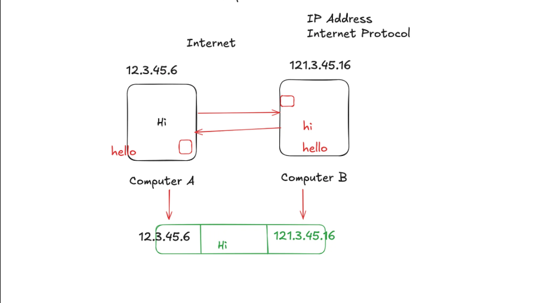

1.) Understanding How Internet Works
How Does Internet Work ?
What is the Internet?
The Internet is a global network of computers and devices connected together. It allows them to communicate, share information, and send data using a common set of rules called protocols (like TCP/IP).
How It Works
- Your Device Connects You connect your phone, laptop, or PC to the internet through Wi-Fi, mobile data, or Ethernet. This connection is provided by your ISP (Internet Service Provider) (like Jio, Airtel, BSNL).
- IP Address Every device on the internet gets a unique ID called an IP address (like your home address, but for computers). Example: 142.250.193.142 (which belongs to Google).
- Domain Names & DNS Humans prefer names like google.com instead of numbers. The DNS (Domain Name System) works like a phonebook: it converts the name into the right IP address so your computer knows where to go.
- Data Transmission (Packets) Information is broken into small pieces called packets. These packets travel across the internet through routers (like post offices that direct traffic). Each packet may take a different route, but they reassemble at the destination.
- Protocols (Rules of Communication)
- TCP (Transmission Control Protocol) makes sure all packets arrive safely and in order.
- IP (Internet Protocol) ensures packets know the sender and receiver addresses.
- Servers & Clients When you open google.com: Your computer (client) requests data from Google’s servers. The server sends back the web page data. That’s how you see websites, videos, etc.
- Physical Infrastructure The internet runs on real things: Fiber optic cables (under the ocean and underground). Satellites & towers for wireless connections. Data centers that store and deliver content.
The Key Principles behind this:
Principle 1: The Need to Share Information
Computers need a way to share information electronically, replacing physical transfer.
Principle 2: The Problem of Scale
Connecting each computer to every other does not scale well; hence local switches.
Principle 3: Connecting Networks
Routers connect networks creating the “network of networks” called the Internet.
Principle 4: The Problem of Finding Anyone (Addressing)
Every device on the internet needs a unique IP Address so messages can find the right destination.
Principle 5: The Problem of Reliability and Fairness
Large data is split into small packets using TCP/IP to ensure reliable and fair delivery.

Network Diagram (ASCII Art)
+-------+ +-------+
| PC A |-----------| Switch|----+
+-------+ +-------+ |
Router
+-------+ +-------+ |
| PC B |-----------| Switch|----+
+-------+ +-------+
Internet of Networks Connected by Routers
2.) IP Addressing
IPv4, IPv6, Public, and Private
- IPv4: 32-bit address; ~4.3 billion addresses.
- An IPv4 (Internet Protocol version 4) address is the classic IP address format most people are familiar with.
- Structure: It’s a 32-bit number. To make it readable for humans, it is divided into four 8-bit sections, each written as a decimal number from 0 to 255.
- Example: 172.217.16.142 (one of Google’s addresses)
- The Big Problem (Why it matters): A 32-bit number means there is a hard limit on the total number of possible addresses: 232, which is about 4.3 billion.
- IPv6: 128-bit address; ~340 undecillion addresses.
- IPv6 (Internet Protocol version 6) is the next generation of the Internet Protocol. Its primary purpose was to solve the address exhaustion problem of IPv4.
- The fundamental difference is the size of the address:
- IPv4: Uses a 32-bit address, giving us ~4.3 billion unique addresses.
- IPv6: Uses a 128-bit address.
- What Does an IPv6 Address Look Like?
- Because it's so long, the format is different. It uses hexadecimal (numbers 0-9 and letters a-f) instead of just decimal numbers.
- An example of a full IPv6 address:
2001:0db8:85a3:0000:0000:8a2e:0370:7334 - Public IP: Globally unique address on the internet.
- A Public IP address is your global, unique address on the internet.
- It must be globally unique — no two devices on the internet can have the same public IP address at the same time.
- Private IP: Internal local network address.
- A Private IP address is a local address used only within your own private network (e.g., home Wi-Fi, office network).
- 10.0.0.0 - 10.255.255.255 - Used by large corporations
- 172.16.0.0 - 172.31.255.255 - Used by medium-sized networks
- 192.168.0.0 - 192.168.255.255 - Most common for home networks
Protocols Table
| Protocol | Description | Port |
|---|---|---|
| HTTP | HyperText Transfer Protocol (web traffic) | 80 |
| HTTPS | Secure HTTP | 443 |
| FTP | File Transfer Protocol | 21 |
| SSH | Secure Shell | 22 |
3.) MAC Address:
A MAC (Media Access Control) Address is a unique, permanent serial number burned into every network-capable piece of hardware (your laptop's Wi-Fi card, your phone, your smart TV, the network port on your desktop).
The most common ways you'll see it displayed are:
- Colon-Separated (Most Common): 3C:22:FB:A3:B4:C5
- Hyphen-Separated (Common on Windows): 3C-22-FB-A3-B4-C5
- Period-Separated (Used by Cisco and other network gear): 3c22.fba3.b4c5
- No Separators (Less common, seen in some software): 3C22FBA3B4C5
How to Find MAC Address
Windows
- Open Command Prompt:
- Click the Start Menu.
- Type cmd and press Enter.
- (Alternatively, press Win + R, type cmd, and press Enter).
- Run the Command:
ipconfig /all - If you only want to see the MAC addresses without all the other details, run:
getmac /v
macOS
- Open Terminal:
- Open Spotlight Search (press Cmd + Space).
- Type Terminal and press Enter.
- Run the Command:
ifconfig
4.) Port Number
- A Port Number is a numerical identifier (0–65535) used with an IP address to identify specific services or applications on a device.
- It is a 16-bit unsigned integer, so there are 216 = 65,536 possible ports.
Categories of Ports
- Well-Known Ports (0-1023)
- Reserved for standard services like:
- 80 - HTTP
- 443 - HTTPS
- 22 - SSH
- 25 - SMTP
- Reserved for standard services like:
- Registered Ports (1024-49151)
- Used by user applications. Examples:
- 3000 - React/Node.js dev servers
- 27017 - MongoDB
- 3306 - MySQL
- Used by user applications. Examples:
- Dynamic / Private Ports (49152-65535)
- Used temporarily by client devices (e.g., when a browser connects to a server).
5.) DNS (Domain Name System)
- What it is: DNS translates human-friendly domain names (like google.com) into computer-friendly IP addresses (like 142.250.72.206).
- Why it matters: Without DNS, we would have to remember long IP numbers instead of names.
How DNS Works (Simplified Steps)
- Check Cache: Browser, OS, or router may already know the IP.
- Recursive Resolver: If not cached, your ISP's resolver (or public ones like Google 8.8.8.8, Cloudflare 1.1.1.1) finds it for you.
- Root → TLD → Authoritative Servers:
- Root servers - tell where to find .com
- TLD servers - tell where to find google.com
- Authoritative server - gives the final IP address
- Return Path: The resolver caches the IP and sends it back to your computer.
- Final Step: Browser connects to the server using the IP (usually on port 443 for HTTPS).

6.) What is Web Development?
Web development is the process of building and maintaining websites or web applications that run on the internet (or private networks).
Frontend (Client-Side)
Everything you see on a website - design, layout, buttons, and images.
It runs directly in your browser (Chrome, Edge, Firefox).
Built Using:
- HTML → structure (skeleton of a site)
- CSS → styling (colors, fonts, layout)
- JavaScript → interactivity (sliders, forms, animations)
- Frameworks/Libraries: React, Angular, Vue
Backend (Server-Side)
The behind-the-scenes part of a website. It handles data, business logic, authentication, and payments. Runs on servers and communicates with databases.
- Common Languages & Frameworks: Node.js, Python (Django/Flask), Java (Spring), PHP (Laravel), C# (ASP.NET)
Database
Stores and manages data for websites and applications.
Types:
- SQL (Structured): MySQL, PostgreSQL
- NoSQL (Flexible): MongoDB, Firebase

7.)📖 Glossary of Terms
- IP Address: A unique identifier assigned to each device on a network (IPv4 or IPv6).
- Public IP: Globally unique address used to identify your device on the internet.
- Private IP: Local address used only within private networks (e.g., 192.168.x.x).
- MAC Address: Permanent hardware ID assigned to a device’s network card.
- Port Number: A 16-bit number used with an IP to identify specific services (e.g., 80 for HTTP).
- Packet: Small unit of data transmitted across the network.
- Protocol: Rules for communication (e.g., TCP/IP, HTTP, HTTPS, FTP, SSH).
- DNS (Domain Name System): Translates domain names (google.com) into IP addresses.
- Router: Device that forwards data between networks.
- Switch: Device that connects multiple devices within a local network.
- Server: Computer that provides services or resources to clients.
- Client: Device/software that requests services from a server.
- Frontend: Client-side part of web development (HTML, CSS, JavaScript).
- Backend: Server-side part that handles logic, databases, and processing.
- Database: System for storing and managing data (SQL or NoSQL).